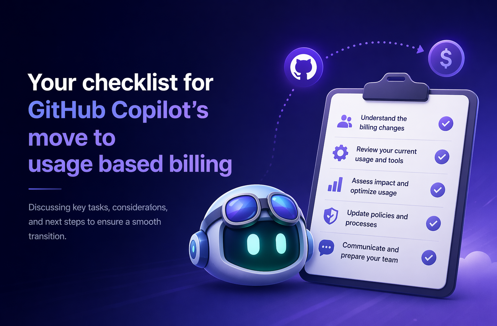

Your checklist for
GitHub Copilot’s move to usage-based billing
Discussing key tasks, considerations, and next steps to ensure a smooth transition to AI credits and usage-based billing.

What’s changing
On June 1, GitHub Copilot moves to a usage-based billing model powered by AI credits. Existing premium-request budgets convert automatically, but you’ll want to review your guardrails, plan user-level budgets (ULBs), and prepare your developers before the switch.
On September 1, the promotional AI credit period ends — another moment to revisit budgets and usage patterns.
What’s in the checklist
The checklist groups nine activities by when they should happen and tags each with who should own it.
Prepare
- Review forecasted impact of billing changes
- Review and adjust budgets
- Plan for user-level budgets (ULBs)
- Communicate changes and coach users
- Update developer tools
Launch
- Set user-level budgets on day one, before users start consuming
Operate
- Monitor enterprise usage and adjust budgets and ULBs as needed
- Monitor your personal usage throughout the month
Reassess
- Re-evaluate budgets and ULBs after the promotional credit period ends
Who it’s for
Configure budgets and ULBs, communicate the change, and monitor enterprise-wide spend.
Update your tooling, choose the right model for the job, and keep an eye on your own usage.
Ready to get started?
Walk through the full checklist, check off items as you go, and track your progress locally in the browser.
Open the checklist →